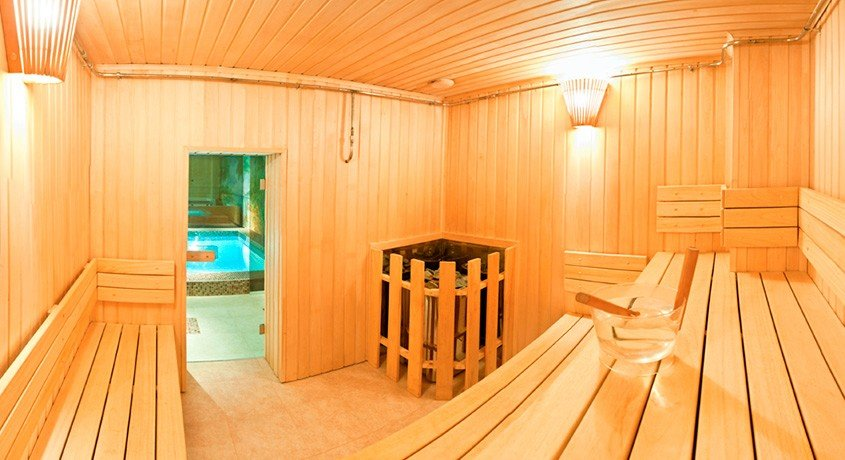
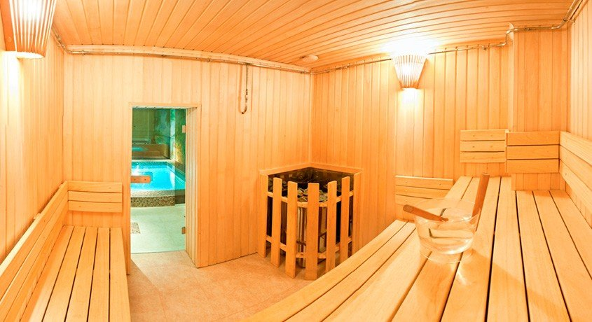

Объявление
Уважаемые посетители,
обращаем ваше внимание на изменение в расписании
группы семейного плавания (свободное посещение)
суббота 18.00 до 19.00
Изменения вступят в силу с октября 2018.
Также объявляется дополнительный набор детей начальных классов в детские спортивно-оздоровительные группы по плаванию.
дополнительные места: Среда, Пятница 18.00.-19.00 и 19.10 - 20.10.
Количество мест ограничено.
Запись проводится ежедневно:
Понедельник с 14.30 до 18.00
Втор.-Пятница с 10.00 до 19.00
Суббота-Воскр. с 10.00 до 18.00


 
